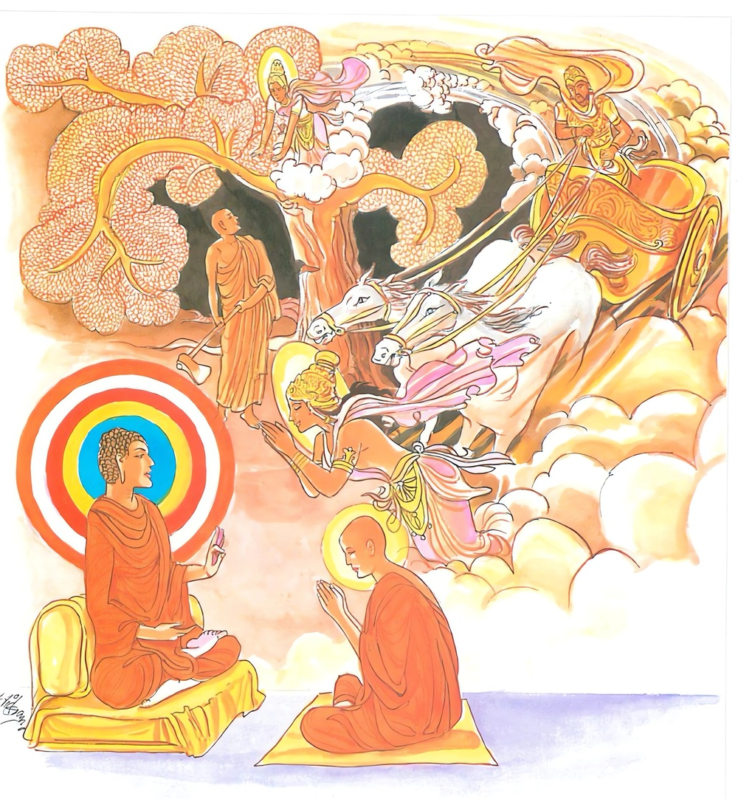

17-2 දෙව්දුවකගේ පැමිණිල්ලෙක්
මෙම කතාව ධම්මපද අටුවාවෙන් ද කියවන්න.
යො චෙ උප්පතිතං කොධං රථං භන්තං’ව ධාරයෙ
තමහං සාරථිං බ්රූමි රස්මිග්ගාහො ඉතරො ජනො.
යමෙක් උපන් ක්රෝධය භ්රාන්ත රථයක් (හෙවත් වේගයෙන් දුවන රියක් වළක වළකා තමා කැමති තැනට මෙහෙයන්නාක්) මෙන් නිගන්නේ ද (වළකා ලන්නේ ද), ඒ පුගුලා රියැදුරැ යි මම් කියමි. රාජාදීන්ගේ අන් රියැදුරු ජන තෙමේ රස්මිග්රාහක (රැහැන ගන්නා) නම් වෙයි. (උතුම් රියැදුරු නම් නො වෙයි.)

තිලෝගුරු බුදුරජානන් වහන්සේ භික්ෂුසඞ්ඝයා වහන්සේ උදෙසා සෙනසුන් අනුදැන වදාළ කල්හි රජගහ නුවර සිටු ආදීහු සෙනසුන් කරවන්නට පටන් ගත්හ. කාත් කවුරුත් නැති අලවුනුවර වැසි අප්රකට භික්ෂු නමක් තමන්ට හිඳිනට සෙනසුනක් කරණුයේ එක් වටිනා ගසක් දැක එය කපන්නට පටන් ගත්තේ ය. එතැන, වසන තැන් කොට හුන් ලදරු පුතකු ඇති එක් දෙව්දුවක් පුතු ඇකයෙහි හොවා ගෙණ “හිමියෙනි! මාගේ විමන නො සිඳිනු මැනැව, පුතුන් රැගෙණ වසන්නට තැන් නැතිව අතැන මෙතැන හැසිරෙන්නට නො හැක්කෙමි”යි බැගෑපත්ව ඉල්ලා සිටියා ය. ඒ මහණ ද “මට මෙ වැනි වටිනා අන් ගසක් ලබා ගැණීම නො කළ හැකි ය”යි ඇයගේ ඒ ඉල්ලීම නො පිළිගත්තේ ය. එවිට ඒ දෙව් දූ තොමෝ “මපුතු දැකීමෙන් මේ මහණ ගස නො කපා හරිණු ඇතැ”යි සිතා සිය ලදරු පුත් එම ගසෙහි අත්තක තැබූ ය. මහණ, ගස කපන්නට සිතා ඔසොවා ගසට ගැසූ පොරව රඳවාලන්නට නො හැකි වූයේ ලදරු දෙව්පුතුගේ බාහුව කපා ගෙණ ගියේ ය. එයින් උපන් බලවත් ක්රෝධ ඇති දෙව් දූ තොමෝ “පහර ගසා මහණ මරන්නෙමි”යි අත් දෙක ඔසොවා ද “මේ මහණ, සිල්වත් ය, මම මොහු මැරූයෙම් නම් නිරයගාමිනී වන්නෙමි, සෙසු දෙවියන් ද තමන් විමන් කොට ගත් ගස් කපා හරිණ මහණුන් දැක අසවල් දෙව්දුව මෙසේ මහණෙක් මරණ ලදැ යි මා පමණ කොට ගෙණ මහණුන් මරා දමනු ඇත, මේ මහණ හට ද ගුරුවරයෙක් ඇත්තේ ය, ඒ ගුරුවරයාට මෙය කියන්නෙමි”යා ඉස්සූ දෙ අත පහත හෙලා හඬමින් බුදුරජුන් වෙත ගොස් වැඳ එකත් පසෙක සිටියා ය. එකල්හි බුදුරජානන් වහන්සේ “දෙව්දුව! තී කුමක් නිසා හඬා දැ”යි අසා වදාළ සේක. “ස්වාමීනි! ඔබවහන්සේගේ ශ්රාවකයකු විසින් මා විමන් කොට ගෙණ තුබූ ගස කපා හරිණ ලද්දේ ය, මට දැන් ඉන්නට නිදන්නට තැනක් නැත, මමත් ඔහු මරණු කැමැත්තෙම් වීමි, එහෙත් එසේ නො කොට මම ඒ මහණහු කළ අපරාධය ඔබ වහන්සේට දන්වන්නට මෙහි ආවා වෙමි”යි දෙව්දූ බුදුරජුන්ට එය විස්තර වශයෙන් දන්වා ලූය. බුදුරජානන් වහන්සේ එය අසා “දෙව්දුව! ඒ ඉතා යහපති, තී කළසැටි ඉතා යහපති, ඉතා වේගයෙන් දුවන රියක් වහා යා නො දී තමන් කැමැති තැනට පමුණුවා ගන්නියක මෙන් තී තමන් සිතෙහි නැගි ක්රෝධය සන්සිඳවා ගත් සැටි ඉතා යහපතැ”
යො වෙ උප්පතිතං කොධං රථං භන්තංව ධාරයෙ,
තමහං සාරථිං බ්රෑමි රස්මිග්ගාහො ඉතරො ජනොති.
යමෙක් එකාන්තයෙන් උපන් ක්රෝධය ඉතා වේගයෙන් දුවන රියක් මෙන් දරා ද, මම ඔහු රියැදුරු යි කියමි. අන්ය වූ (රියැදුරු) ජනතෙමේ රැහැන් අතට ගන්නේ නම් වේ.
යො වෙ උප්පතිතං කොධං = යමෙක් එකාන්තයෙන් උපන් ක්රෝධය [1]
රථං භන්තං ඉව = වේගයෙන් දුවන රියක් මෙන්.
ධාරයෙ = දරා ද.
තං අහං සාරථිං බ්රෑමි = මම ඔහු රියැදුරු යි කියමි.
යම්සේ රිය පැදවීමෙහි දක්ෂ වූ රියැදුරු තෙමේ ඉතා වේගයෙන් දුවන රිය වහා යා නො දී තමන් කැමැති තැනට පමණුවා ගණී ද, එපරිද්දෙන් තමන් සිත්තුළ උපන් ක්රෝධය, යම් ඒ එකෙක් ඉදිරියෙහි වැඩෙන්නට නො දී හිතන්නට පිළිවන් මගට පමුණුවා සන්සිඳවා ලන්නට සමර්ත්ථ වේ ද ඔහු රියැදුරු යි කියමි යන අදහසි.
“සහ රථෙන වර්තතෙ යො සෞ සරථඃ, අශ්වඃ, තං ප්රෙරයතීති = සාරථිඃ” යනු විවෘතියි. රිය හා බැඳුනේ යමෙක්ද හේ සරථය. අශ්වතෙමේ ය. ඒ අසු මෙහෙය වනුයේ සාරථි නමි. එය මෙසේ ද කීහ. රථාදිඝොටකනියොගකර්තා = සාරථිඃ”යි. ඔහු පිළිබඳ ලක්ෂණ කීයේ මෙසේ ය.
“නිමිත්තශකුනඥානො හයශික්ෂාවිශාරදඃ
හයායුර්වෙදතත්ත්වඥො භූරිභාගවිශේෂවිත්” යි
නිමිත්ත ලක්ෂණ දන්නා වූ අසුන් හික්මවීමෙහි විශාරද වූ අසුන් පිළිබඳ වෙදකම්හි තතු දත් පෘථිවියෙහි ඒ ඒ කොටස්හි සමවිසමකම් දැන සිටි තැනත්තේ සාරථිය යනු එහි අරුත් ය. මේ සාමාන්ය ලෝකයාගේ පිළිගැණීම ය.
බුදුරජානන් වහන්සේ මෙහිලා ඒ ලෝකයා පිළිගත් සාරථීහු නො ද පිළිගත්හ. තම සිත්තුළ උපන් ක්රෝධවේගය සන්සිඳවා තම සිත නිවන්මගට මෙහෙය වන්නහු සාරථි යි උන්වහන්සේ පිළිගත්හ.
රස්මිග්ගාහො ඉතරො ජනො = අන් රියැදුරු රැහැන් අතට ගත්තේ නම් වේ.
අන්ය වූ රජ මහඇමැති ආදීන්ගේ රියසැරි තෙමේ උසස් වූ රියැදුරු නො වේ. හෙතෙමේ මෙහි කියූ රියැසැරිට වඩා ඉතා පහත් ය. එහෙයින් හේ උතුම් නො වේ ය යි අටුවායෙහි කීහ.
ඉතර ශබ්දය අන්ය යන අරුත්හි ආයේ ය. ඒ සර්වනාමයෙකි. සර්වනාම නම්: සියලු නාමයන්ට අයත් නාමයෝ ය. “සබ්බෙසං නාමානි සබ්බනාමානි” යනු විවෘති යි. මෙය න්යාසයෙහි ආයේ ය. මෙයත් කීයේ තුන් ලිඟුවෙහි ම වූ සියලු නාමයන්ට විශේෂණ විසින් යෙදිය හැකි නාම සර්වනාම බව ය.
“යානි හොන්ති තිලිඞ්ගානි අනුකූලානි යානි ච,
තිලිඞ්ගානං විසෙසෙන පදානෙතානි නාමතො”
යනු එහිලා දන්නේ ය.
මෙ කී නාමයෝ සමහර යෙදුම්හි නාමයන්ට විශේෂණව ද සමහර යෙදුම්හි එකලාව ද සිට ප්රයෝගානුකූලව අර්ත්ථ ප්රකාශ කරන්නාහ.
“තෙසු කානිචි රූපානි සෙහඤ්ඤෙහි ච යුජ්ජරෙ,
කානි ච පන සෙහෙව එතෙසං ලක්ඛණං ඉදං”
යනු ශාබ්දික වචනයි. කච්චායන භේද ටීකායෙහි “සබ්බත්ථවාච කත්තා ච සබ්බලිඞ්ගයුත්තත්තා ච සබ්බනාමං නාම” මුග්ධබෝධටීකායෙහි “සර්වෙෂාං බුද්ධිස්ථානාං නාම සර්වනාම” යනු විසින් කියන ලද්දේ ද සිත්හි කළ යුතු ය. මෙකී ලක්ෂණයන්ගෙන් තොර වූයේ සර්වනාම නො වේ ය යි කීහ. මේ ඒ කීම:- “එතස්මා ලක්ඛණා මුත්තං න පදං සබ්බනාමිකං” යනු.
රූපසිද්ධි ශබ්දනීති දෙක්හි සර්වනාමශබ්ද සත් විසසකැ යි ද පදසාධනටීකායෙහි සූවිස්සකැ යි ද මොග්ගල්ලායනවාවෘත්තියෙහි තෙවිස්සකැයි ද මුග්ධබෝධයෙහි පන්තිසකැයි ද බාලාවතාරයෙහි දෙවිස්සෙකැයි ද කියන ලදි. කච්චායනභේදයෙහි එව පයෝග වන්ත - වචන - ගුණ - පුච්ඡා - පමාණික - සබ්බසබ්බ - දිසා - අවත්ථා - සඞ්ඛ්යා - කාල යි කොටස් විසින් දශ කොටසක් කොට දක්වන ලද්දේය. [2]
ධර්මදේශනාවගේ අවසානයෙහි දෙව් දූ තොමෝ සෝවන් පලයෙහි පිහිටියා ය. ධර්මදේශනා තොමෝ පැමිණ සිටි පිරිසට ද වැඩ සහිත වූ ය.
මෙසේ දෙව් දූ තොමෝ සෝවන්පලයට පැමිණියා ද අඬමින් එහි රැඳී සිටියා ය. එකල්හි බුදුරජානන් වහන්සේ “දෙව්දුව! තී කුමක් නිසා හඬා දැ?”යි අසා වදාළ කල්හි “ස්වාමීනී! මාගේ විමන නටුයේ ය, මට දැන් රැඳෙන්නට තැනෙක් නැත, එහෙයින් කුමක් කරම් දැ”යි සිතත් කඳුලු නැගේ ය”යි ඕ තොමෝ කිවූ ය. බුදුරජානන් වහන්සේ “කණස්සලු නො වෙව, මම තිට වසන්නට විමනක් දක්වා දෙන්නෙමි”යි දෙව්රම් වෙහෙර ගඳකිළිය අසල පළමුදා චුතව ගිය දෙව්දුවකට විමනක් ව තුබූ රුකක් පෙන්වා “අසවල් තැන කවුරුත් නැති නිදහස් වූ රුකෙක් ඇත, එහි යව”යි වදාළ සේක. ඕ එතැනට ගොස් නවාතැන් ගත්තී ය. එතැන් පටන් මෑගේ මේ විමන බුද්ධදත්තික විමානය යි ප්රසිද්ධ වි ය. මහෙශාක්ය දෙවියෝ ද එතැන සොලවාලන්නට පොහොත් නො වූහ. බුදුරජානන් වහන්සේ මෙය කරුණු කොට භික්ෂූන් වහන්සේට භූතගාමශික්ෂාපදය පැණවූ සේක.
අන්යතරභික්ෂු වස්තුව නිමි.